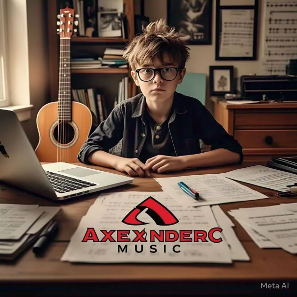
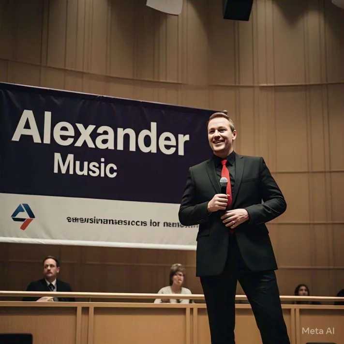

Sobre nuestros integrantes:
Alexander Dominguez
Fundador de Alexander Music

Nacido el 19 de noviembre de 2009, Alexander incursiono en la musica en principio a estar en la banda de guerra de su secundaria, cosa que le gusto y decidio tomarlo como oficio para el futuro, siendo que cumplio su sueño de fundar su productora Alexander Music, con el fin de apoyar la musica de diversos generos, asi como de crear la propia.
Liam Amador
Patrocinador de Alexander Music

Nacido el 3 de marzo de 2010, Liam encontro un enorme potencial en la industrial musical, interesado principalmente en esta bella fundacion, convirtiendo en su patrocinador e inversor principal del proyecto.
Dorian Ramirez
Productor y Abogado de Alexander Music
Nacido el 10 de marzo de 2025, se volvio uno de los amigos de Alexander durante la secundaria, apoyandolo en su proyecto. para el cual, estudio derecho y el manejo de programas de musica con el fin de ayudar a su buen amigo.
Sebastian Alonso
Community Manager y Diseñador Web de Alexander Music
Nacido el 5 de enero de 2010, Sebastian se intereso plenamete en el desarrollo de software entrando en la creacion de paginas web, Liam le menciono del proyecto de Alexander Music al cual este accedio al encargarse del desarrollo de su sitio web, asi como de administrar sus redes sociales.